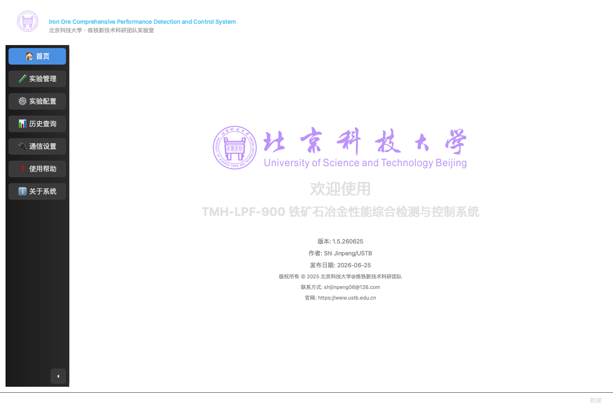
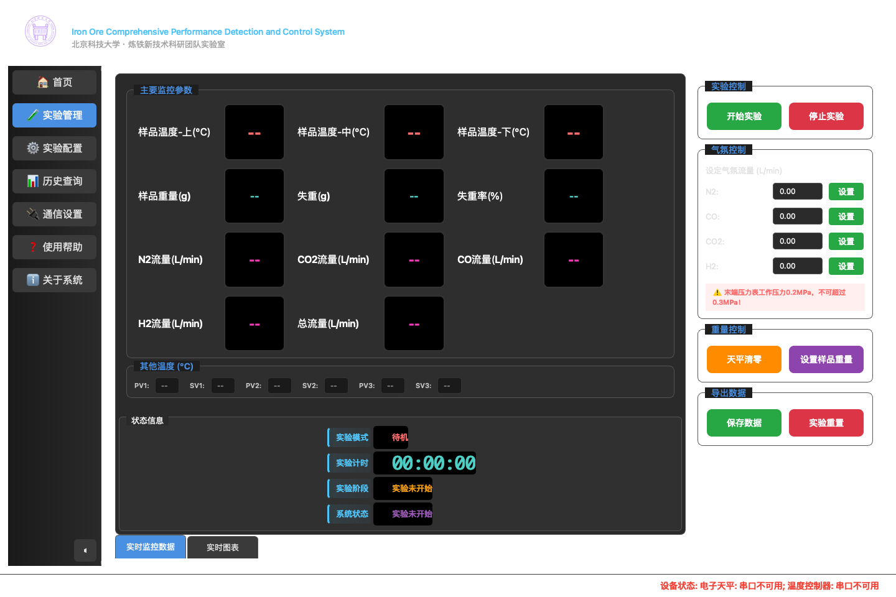
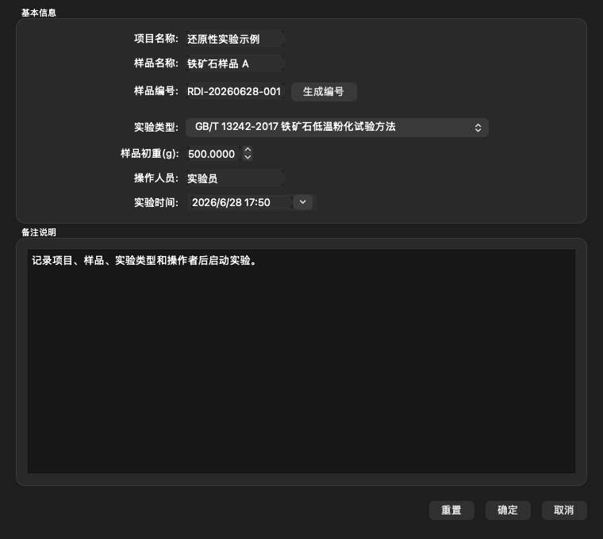
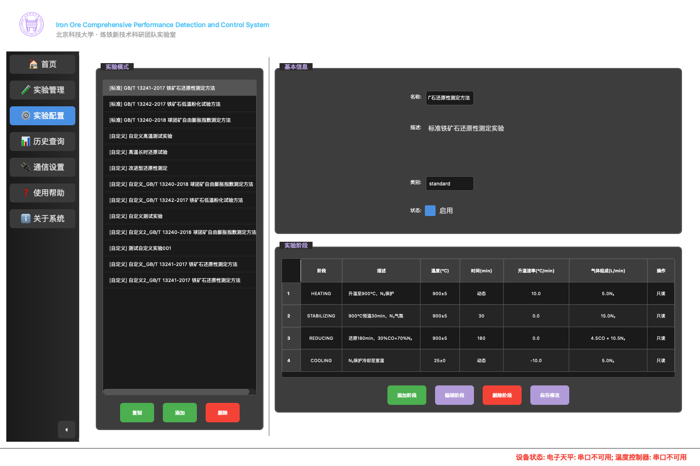
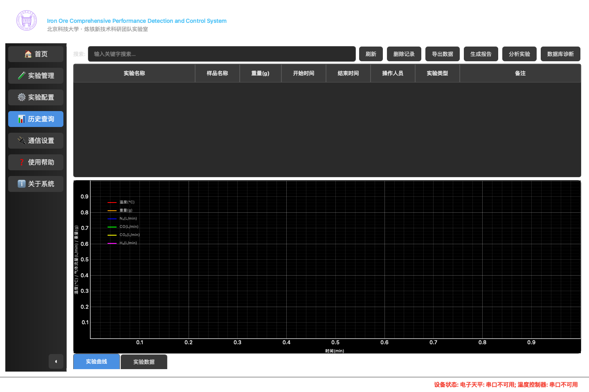
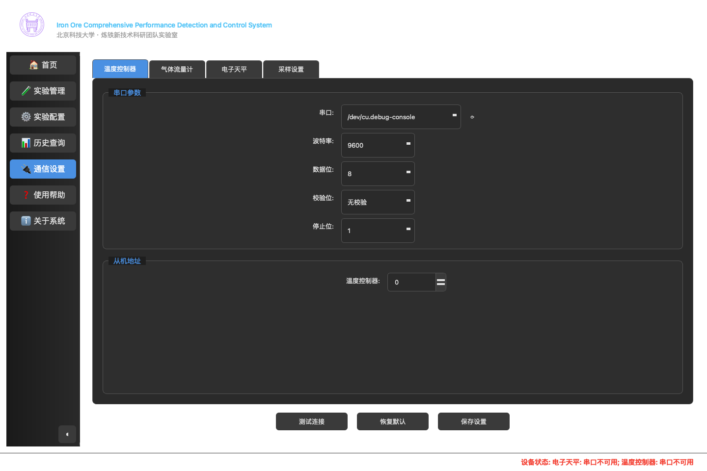
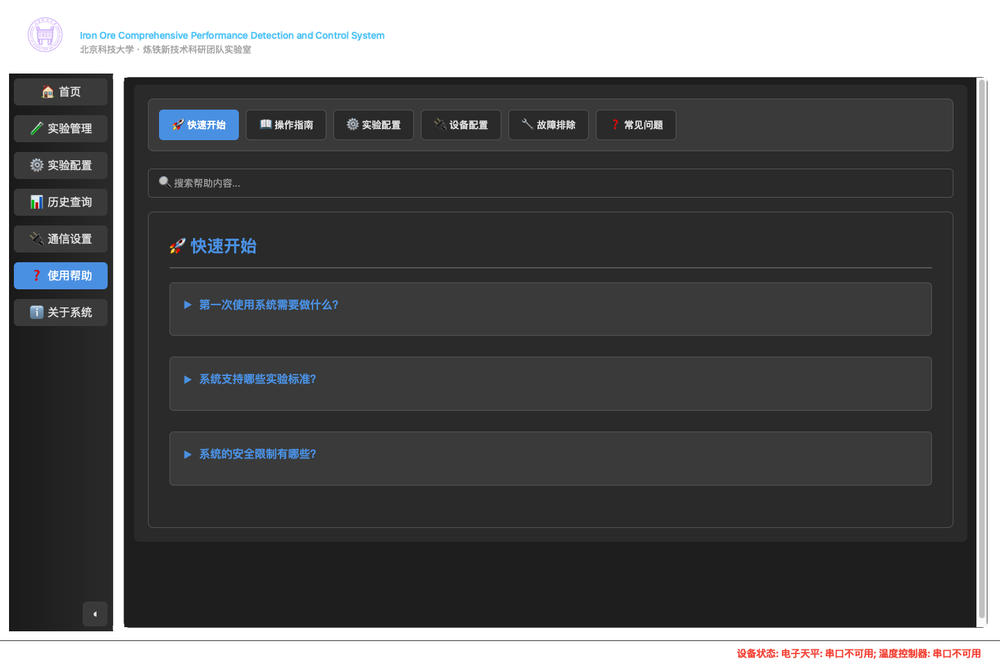
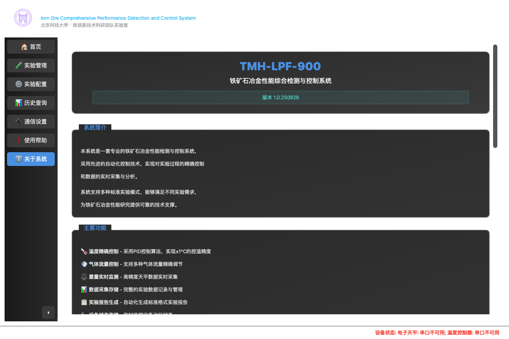

首页与主框架
主窗口采用深色仪器控制台风格，左侧固定导航包含：首页、实验管理、实验配置、历史查询、通信设置、使用帮助、关于系统。顶部展示软件名称、英文副标题、开发单位和当前时间。
- 首页展示北京科技大学标识、软件名称、版本、作者、发布日期、联系方式和官网。
- 侧边栏支持折叠，折叠后保留图标和悬浮提示。
- 底部状态栏用于集中显示设备连接与异常信息，避免标题栏重复提示。

TMH-LPF-900 desktop UI review
本文档基于本地实际运行界面整理，覆盖主窗口、实验控制、实验配置、历史查询、通信设置、帮助页和实验参数弹窗，便于研发、测试、交付和现场培训快速理解系统能力。

本次截图在 macOS 本地环境生成，使用 Python 3.12 虚拟环境安装 `requirements-dev.txt` 和本地 `packages/tmh_comm` 包。主程序入口为 `src/app.py`。
本机未连接实验串口设备，温控、MFC、天平默认端口无法打开，应用仍可启动并进入重连状态。截图底部红色状态栏反映的是无设备连接的本地验证状态。
# 首次运行
/opt/homebrew/bin/python3.12 -m venv .venv
.venv/bin/python -m pip install -r requirements-dev.txt -e packages/tmh_comm
# 启动桌面程序
QTWEBENGINE_DISABLE_SANDBOX=1 .venv/bin/python src/app.py现场运行时需要先确认温度控制器、气体质量流量计和电子天平对应串口可用。无设备环境适合做界面、配置、历史数据和报告流程验证，但不能完成真实实验启动。
在通信设置中确认温控器、MFC、天平串口参数、从机地址、采样间隔和可燃气体安全上限。
使用内置 GB 标准模式，或复制标准模式后编辑自定义阶段、目标温度、时间和气体配比。
点击开始实验，填写项目、样品、编号、类型、初重、操作者和备注，系统会校验必填项。
实验中查看温度、流量、重量和失重率，必要时手动设置气体流量、清零天平或设置初始重量。
停止后进入历史查询，筛选记录、回放曲线、导出 CSV/TXT/XLSX，并按实验类型生成 HTML 报告。
主窗口采用深色仪器控制台风格，左侧固定导航包含：首页、实验管理、实验配置、历史查询、通信设置、使用帮助、关于系统。顶部展示软件名称、英文副标题、开发单位和当前时间。

实验管理页是日常操作核心。左侧包含实时监控数据和实时图表两个标签页，右侧是控制面板。当前截图处于无设备连接状态，因此数值显示为占位符并在状态栏提示串口不可用。
点击“开始实验”后，系统先打开实验参数设置弹窗。保存成功后才会进入设备可用性检查、实验文件创建、实验模式配置和实验运行流程。

实验配置页用于查看和维护实验模式。左侧列表合并展示内置标准模式与用户自定义模式，右侧展示基本信息和阶段表。标准模式默认只读，可通过复制生成可编辑自定义模式。

历史查询页面向实验记录管理。上方提供搜索、刷新、删除、导出、生成报告、分析实验和数据库诊断按钮；中部表格展示实验元数据；下方标签页用于查看实验曲线和原始实验数据。

通信设置页按设备和采样分标签配置，覆盖温度控制器、气体流量计、电子天平和采样设置。页面切换或关闭时会提示未保存修改。

帮助页通过内置 WebEngine 加载本地 `resources/help.html`，提供快速开始、操作指南、实验配置、设备配置、故障排除和常见问题。关于页以滚动内容展示系统简介、主要功能、标准规范、开发团队、版权和联系方式。


| 模式 | 用途 | 核心阶段 | 典型气氛与温度 |
|---|---|---|---|
| GB/T 13241-2017 铁矿石还原性测定方法 | 测定铁矿石还原性能。 | 升温、900℃恒温、180 min 还原、N2 保护冷却。 | 900℃，30% CO + 70% N2，还原总流量 15 L/min。 |
| GB/T 13242-2017 铁矿石低温粉化试验方法 | 测定低温条件下铁矿石粉化特性。 | 升温、500℃恒温、60 min 还原、N2 保护冷却。 | 500℃，20% CO + 20% CO2 + 60% N2，还原总流量 15 L/min。 |
| GB/T 13240-2018 球团矿自由膨胀指数测定方法 | 测定球团矿在还原气氛下的自由膨胀指数。 | 升温、900℃恒温、60 min 还原、N2 保护冷却至 50℃。 | 900℃，30% CO + 70% N2，还原总流量 15 L/min。 |